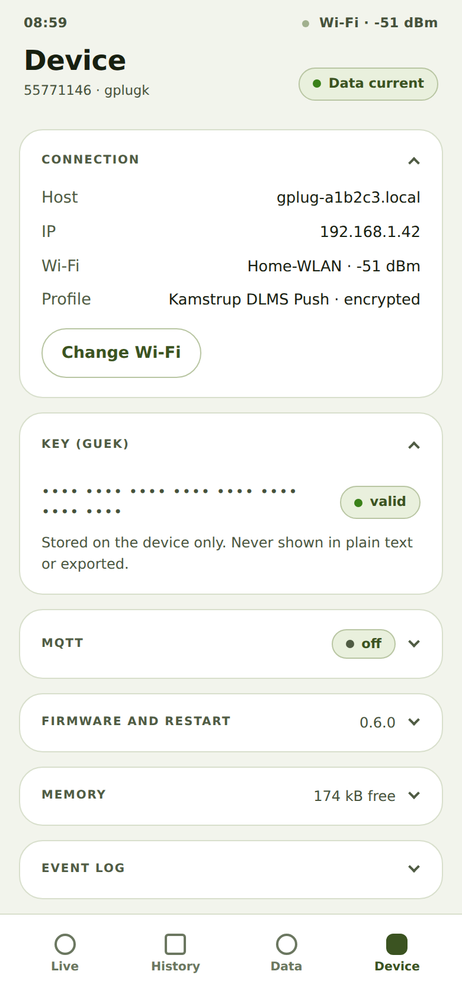

Look up the gPlug's address and connection
What it is about
As the owner of a gPlug I want to look up the address it is reachable at and how good its Wi-Fi reception is, so that I can find it again and choose a good spot for it.
How to do it
- Tap Device at the bottom. The Connection card is open.
- It shows the Host (the address ending in
.local), the IP, the Wi-Fi with its signal strength and the selected Profile.
Device tab with connection and key
How you know it worked
- The address shown also opens the app on another device in the same Wi-Fi.
Notes
- The signal strength is given in dBm: −50 is very good, below −80 the connection becomes unreliable.
- Every card on the Device tab opens and closes with a tap on its title; the browser remembers your choice.
Checked with the device simulator on 30 September 2026.